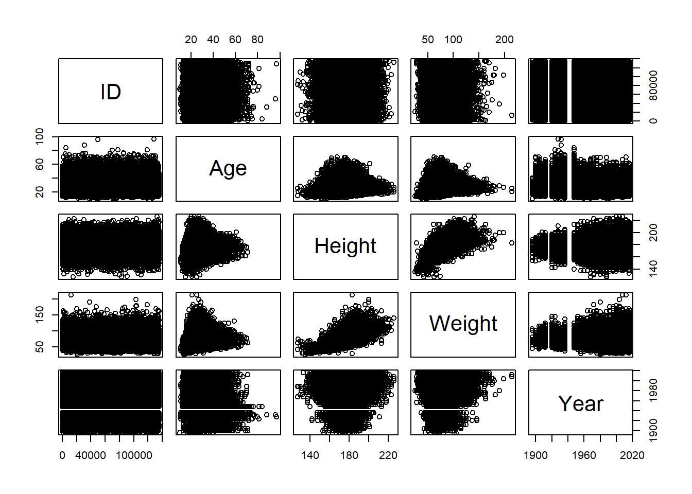
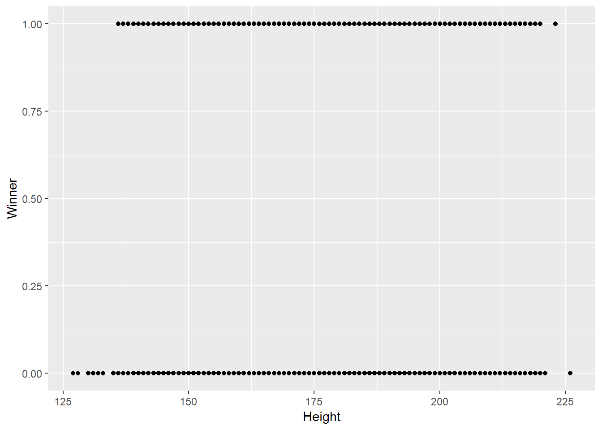

6 More Complicated Analyses
6.1 Other Datasets
6.1.1 Importing Your Own Data
So far in this course, we’ve been working exclusively with the data pre-available in R and a few of the packages we’ve taken advantage of. While this is a good way to learn R, at some point you may want to use your own data for analysis.
Luckily, R has a number of functions used to import data from external files. To demonstrate these, I’ll be using datasets located on GitHub, in the “Datasets” folder. You don’t necessarily need to download these files - but we’ll be using these for demonstration throughout this unit.
These datasets are from the website Kaggle, where a number of data professionals share methods and datasets. Specifically, we’ll be working with two datasets concerning all Olympic athletes from the first 120 years of the game. Additionally, we’ll use data on NBA athletes from the 2014-2015 season. I’m not a huge sports guy myself, but there’s a huge amount of sports-related data available publicly online, so it’s a good tool for our analyses.
We’re going to be assuming that your data are located in the same folder as your script - this is usually the easiest way to manage datasets. Otherwise, you’ll have to wrestle a little with using relative pathways and directory names - Hadley Wickham explains these in more detail here.
In order to do this, we’ll be using the readr package, which is included in the base tidyverse:
library(tidyverse)## -- Attaching packages ---------------------------------------------------------------------------------------- tidyverse 1.2.1 --## v ggplot2 3.0.0 v purrr 0.2.4
## v tibble 1.4.2 v dplyr 0.7.4
## v tidyr 0.8.0 v stringr 1.3.0
## v readr 1.1.1 v forcats 0.3.0## -- Conflicts ------------------------------------------------------------------------------------------- tidyverse_conflicts() --
## x dplyr::filter() masks stats::filter()
## x dplyr::lag() masks stats::lag()All the datasets included in our example use different delimiters - the character that tells R (or Excel, or whatever program you’re using) where one column stops and the next one begins. No matter what your delimiter is, we can parse the file using read_delim() - the first argument is the filename to read, while the second is the delimiter used. For instance, our text file is tab delimited - and since tabs are represented in R as \t, we’ll tell read_delim() to use that as a delimiter:
NOCRegions <- read_delim("noc_regions.txt", "\t")## Parsed with column specification:
## cols(
## NOC = col_character(),
## region = col_character(),
## notes = col_character()
## )NOCRegions## # A tibble: 230 x 3
## NOC region notes
## <chr> <chr> <chr>
## 1 AFG Afghanistan <NA>
## 2 AHO Curacao Netherlands Antilles
## 3 ALB Albania <NA>
## 4 ALG Algeria <NA>
## 5 AND Andorra <NA>
## 6 ANG Angola <NA>
## 7 ANT Antigua Antigua and Barbuda
## 8 ANZ Australia Australasia
## 9 ARG Argentina <NA>
## 10 ARM Armenia <NA>
## # ... with 220 more rowsWe can do the same thing with documents that have comma separated values (known as CSVs):
AthleteEvents <- read_delim("athlete_events.csv", ",")## Parsed with column specification:
## cols(
## ID = col_integer(),
## Name = col_character(),
## Sex = col_character(),
## Age = col_integer(),
## Height = col_integer(),
## Weight = col_double(),
## NOC = col_character(),
## Games = col_character(),
## Year = col_integer(),
## Season = col_character(),
## Sport = col_character(),
## Event = col_character(),
## Medal = col_character()
## )AthleteEvents## # A tibble: 271,116 x 13
## ID Name Sex Age Height Weight NOC Games Year Season Sport
## <int> <chr> <chr> <int> <int> <dbl> <chr> <chr> <int> <chr> <chr>
## 1 1 A Diji~ M 24 180 80. CHN 1992 ~ 1992 Summer Bask~
## 2 2 A Lamu~ M 23 170 60. CHN 2012 ~ 2012 Summer Judo
## 3 3 Gunnar~ M 24 NA NA DEN 1920 ~ 1920 Summer Foot~
## 4 4 Edgar ~ M 34 NA NA DEN 1900 ~ 1900 Summer Tug-~
## 5 5 Christ~ F 21 185 82. NED 1988 ~ 1988 Winter Spee~
## 6 5 Christ~ F 21 185 82. NED 1988 ~ 1988 Winter Spee~
## 7 5 Christ~ F 25 185 82. NED 1992 ~ 1992 Winter Spee~
## 8 5 Christ~ F 25 185 82. NED 1992 ~ 1992 Winter Spee~
## 9 5 Christ~ F 27 185 82. NED 1994 ~ 1994 Winter Spee~
## 10 5 Christ~ F 27 185 82. NED 1994 ~ 1994 Winter Spee~
## # ... with 271,106 more rows, and 2 more variables: Event <chr>,
## # Medal <chr>(You may have noticed that took a second to load - at least, if your computer is middle-of-the-road. This dataset has 271,116 rows - even more than our diamonds dataset - so analyses might take slightly longer with it. Imagine how long “big data” problems would take on your computer, when datasets have several million rows of observations!)
However, readr also includes a pretty good tool specifically for CSV files:
AthleteEvents <- read_csv("athlete_events.csv")## Parsed with column specification:
## cols(
## ID = col_integer(),
## Name = col_character(),
## Sex = col_character(),
## Age = col_integer(),
## Height = col_integer(),
## Weight = col_double(),
## NOC = col_character(),
## Games = col_character(),
## Year = col_integer(),
## Season = col_character(),
## Sport = col_character(),
## Event = col_character(),
## Medal = col_character()
## )AthleteEvents## # A tibble: 271,116 x 13
## ID Name Sex Age Height Weight NOC Games Year Season Sport
## <int> <chr> <chr> <int> <int> <dbl> <chr> <chr> <int> <chr> <chr>
## 1 1 A Diji~ M 24 180 80. CHN 1992 ~ 1992 Summer Bask~
## 2 2 A Lamu~ M 23 170 60. CHN 2012 ~ 2012 Summer Judo
## 3 3 Gunnar~ M 24 NA NA DEN 1920 ~ 1920 Summer Foot~
## 4 4 Edgar ~ M 34 NA NA DEN 1900 ~ 1900 Summer Tug-~
## 5 5 Christ~ F 21 185 82. NED 1988 ~ 1988 Winter Spee~
## 6 5 Christ~ F 21 185 82. NED 1988 ~ 1988 Winter Spee~
## 7 5 Christ~ F 25 185 82. NED 1992 ~ 1992 Winter Spee~
## 8 5 Christ~ F 25 185 82. NED 1992 ~ 1992 Winter Spee~
## 9 5 Christ~ F 27 185 82. NED 1994 ~ 1994 Winter Spee~
## 10 5 Christ~ F 27 185 82. NED 1994 ~ 1994 Winter Spee~
## # ... with 271,106 more rows, and 2 more variables: Event <chr>,
## # Medal <chr>Now, readr doesn’t have native support for more complicated files, like Excel files. Philosphically, you shouldn’t store data in Excel format for long periods of time - we have no idea how long Microsoft will be around for, and the encoding used by Excel may someday disappear and take your data with it. CSVs are generally preferred for long-term data storage, as they’re easy to understand visually and are easily parsed by computers.
However, data entry is much easier in Excel, and plenty of data professionals still use the format. Luckily, there’s a package - readxl - designed to parse these types of files:
install.packages("readxl")library(readxl)NBAStats <- read_excel("players_stats.xlsx")
NBAStats## # A tibble: 490 x 34
## Name `Games Played` MIN PTS FGM FGA `FG%` `3PM` `3PA` `3P%`
## <chr> <dbl> <dbl> <dbl> <dbl> <dbl> <dbl> <dbl> <dbl> <dbl>
## 1 AJ Price 26. 324. 133. 51. 137. 37.2 15. 57. 26.3
## 2 Aaron B~ 82. 1885. 954. 344. 817. 42.1 121. 313. 38.7
## 3 Aaron G~ 47. 797. 243. 93. 208. 44.7 13. 48. 27.1
## 4 Adreian~ 32. 740. 213. 91. 220. 41.4 1. 9. 11.1
## 5 Al Horf~ 76. 2318. 1156. 519. 965. 53.8 11. 36. 30.6
## 6 Al Jeff~ 65. 1992. 1082. 486. 1010. 48.1 2. 5. 40.0
## 7 Alan An~ 74. 1744. 545. 195. 440. 44.3 73. 210. 34.8
## 8 Alec Bu~ 27. 899. 374. 121. 300. 40.3 26. 68. 38.2
## 9 Alex Ki~ 5. 14. 4. 1. 4. 25.0 0. 0. 0.
## 10 Alex Len 69. 1518. 432. 179. 353. 50.7 1. 3. 33.3
## # ... with 480 more rows, and 24 more variables: FTM <dbl>, FTA <dbl>,
## # `FT%` <dbl>, OREB <dbl>, DREB <dbl>, REB <dbl>, AST <dbl>, STL <dbl>,
## # BLK <dbl>, TOV <dbl>, PF <dbl>, EFF <dbl>, `AST/TOV` <dbl>,
## # `STL/TOV` <dbl>, Age <dbl>, Birth_Place <chr>, Birthdate <dttm>,
## # Collage <chr>, Experience <chr>, Height <dbl>, Pos <chr>, Team <chr>,
## # Weight <dbl>, BMI <dbl>You’ll also notice that RStudio has an “import dataset” button in the top right corner, which makes use of both the readr and readxl packages. This button lets you point and click your way through data import, and then copy the code into your script. It’s a great resource for beginners!
6.1.2 Exporting Data
Writing data to a file is also pretty painless using readr. There are as many options for delimiters as before - you can use write_delim() to specify which you want to use with your data - but more commonly data is imported and exported as CSV files using write_csv()
write_csv(AthleteEvents, "athlete_events.csv")Note that, like all other tidyverse functions, the dataset is the first thing you specify.
6.1.3 Data Exploration
Let’s put NBAStats off to the side for a moment, and look at our other two datasets. AthleteEvents is a list of all olympic competitors from 1892 to 2016, including basic statistics about each and any medals they may have won. NOCRegions, meanwhile, maps codes used by the National Olympic Committee (NOC) to the countries they represent.
We can get a sense of the variables this dataset measures using psych::describe()
psych::describe(AthleteEvents)## Warning in psych::describe(AthleteEvents): NAs introduced by coercion
## Warning in psych::describe(AthleteEvents): NAs introduced by coercion
## Warning in psych::describe(AthleteEvents): NAs introduced by coercion
## Warning in psych::describe(AthleteEvents): NAs introduced by coercion
## Warning in psych::describe(AthleteEvents): NAs introduced by coercion
## Warning in psych::describe(AthleteEvents): NAs introduced by coercion
## Warning in psych::describe(AthleteEvents): NAs introduced by coercion
## Warning in psych::describe(AthleteEvents): NAs introduced by coercion## Warning in FUN(newX[, i], ...): no non-missing arguments to min; returning
## Inf
## Warning in FUN(newX[, i], ...): no non-missing arguments to min; returning
## Inf
## Warning in FUN(newX[, i], ...): no non-missing arguments to min; returning
## Inf
## Warning in FUN(newX[, i], ...): no non-missing arguments to min; returning
## Inf
## Warning in FUN(newX[, i], ...): no non-missing arguments to min; returning
## Inf
## Warning in FUN(newX[, i], ...): no non-missing arguments to min; returning
## Inf
## Warning in FUN(newX[, i], ...): no non-missing arguments to min; returning
## Inf
## Warning in FUN(newX[, i], ...): no non-missing arguments to min; returning
## Inf## Warning in FUN(newX[, i], ...): no non-missing arguments to max; returning
## -Inf
## Warning in FUN(newX[, i], ...): no non-missing arguments to max; returning
## -Inf
## Warning in FUN(newX[, i], ...): no non-missing arguments to max; returning
## -Inf
## Warning in FUN(newX[, i], ...): no non-missing arguments to max; returning
## -Inf
## Warning in FUN(newX[, i], ...): no non-missing arguments to max; returning
## -Inf
## Warning in FUN(newX[, i], ...): no non-missing arguments to max; returning
## -Inf
## Warning in FUN(newX[, i], ...): no non-missing arguments to max; returning
## -Inf
## Warning in FUN(newX[, i], ...): no non-missing arguments to max; returning
## -Inf## vars n mean sd median trimmed mad min max
## ID 1 271116 68248.95 39022.29 68205 68290.17 50019.96 1 135571
## Name* 2 271116 NaN NA NA NaN NA Inf -Inf
## Sex* 3 271116 NaN NA NA NaN NA Inf -Inf
## Age 4 261642 25.56 6.39 24 24.87 4.45 10 97
## Height 5 210945 175.34 10.52 175 175.31 10.38 127 226
## Weight 6 208241 70.70 14.35 70 69.90 13.34 25 214
## NOC* 7 271116 NaN NA NA NaN NA Inf -Inf
## Games* 8 271116 NaN NA NA NaN NA Inf -Inf
## Year 9 271116 1978.38 29.88 1988 1981.65 29.65 1896 2016
## Season* 10 271116 NaN NA NA NaN NA Inf -Inf
## Sport* 11 271116 NaN NA NA NaN NA Inf -Inf
## Event* 12 271116 NaN NA NA NaN NA Inf -Inf
## Medal* 13 39783 NaN NA NA NaN NA Inf -Inf
## range skew kurtosis se
## ID 135570 0.00 -1.20 74.94
## Name* -Inf NA NA NA
## Sex* -Inf NA NA NA
## Age 87 1.75 6.27 0.01
## Height 99 0.02 0.18 0.02
## Weight 189 0.80 2.02 0.03
## NOC* -Inf NA NA NA
## Games* -Inf NA NA NA
## Year 120 -0.82 -0.21 0.06
## Season* -Inf NA NA NA
## Sport* -Inf NA NA NA
## Event* -Inf NA NA NA
## Medal* -Inf NA NA NAWow, R didn’t like that!
R didn’t know how to calculate most of the fields in describe() for character vectors. We can try that process again with only the numeric columns by using select_if() from dplyr:
psych::describe(select_if(AthleteEvents, is.numeric))## vars n mean sd median trimmed mad min max
## ID 1 271116 68248.95 39022.29 68205 68290.17 50019.96 1 135571
## Age 2 261642 25.56 6.39 24 24.87 4.45 10 97
## Height 3 210945 175.34 10.52 175 175.31 10.38 127 226
## Weight 4 208241 70.70 14.35 70 69.90 13.34 25 214
## Year 5 271116 1978.38 29.88 1988 1981.65 29.65 1896 2016
## range skew kurtosis se
## ID 135570 0.00 -1.20 74.94
## Age 87 1.75 6.27 0.01
## Height 99 0.02 0.18 0.02
## Weight 189 0.80 2.02 0.03
## Year 120 -0.82 -0.21 0.06When I see this output, TK things catch my eye:
- We knew we were missing observations, but wow, we’re missing observations. Over 60,000 athletes have no weight listed, while over 50,000 don’t have a height.
- Mean height is 175.34 while mean weight is 70.7, suggesting that we’re using metric units here
- Looking at mean, skew and kurtosis, it seems like we have a lot more athletes in recent years - the distribution is centered around 1978, almost 100 years into our 120 year dataset - and that while an incredible number of athletes are young (25, with a kurtosis of 6.27!), we have plenty of older competitors.
If we want to get a sense of correlations in the data, we can try using pairs() again - but be warned, this one might take a while due to the size of the data.
pairs(select_if(AthleteEvents, is.numeric))
(Pop quiz for the history nerds: what are those vertical bars in the Year column?)
That’s a little chaotic, but we can still see trends nicely enough. It looks like height and weight have increased in variance over the years, probably due to the increased number of athletes overall. Height and weight look tightly correlated, as do age and the other statistics, interestingly enough. If we look at the actual correlation coefficients, we can see these trends numerically. We’re going to have to remove the NAs manually, first, using dplyr’s drop_na
AthleteEvents %>%
select_if(is.numeric) %>%
drop_na() %>%
cor()## ID Age Height Weight Year
## ID 1.000000000 -0.002100308 -0.01219033 -0.009038648 0.007066518
## Age -0.002100308 1.000000000 0.14168449 0.212040722 0.089142499
## Height -0.012190329 0.141684490 1.00000000 0.796572579 0.048141525
## Weight -0.009038648 0.212040722 0.79657258 1.000000000 0.022175179
## Year 0.007066518 0.089142499 0.04814153 0.022175179 1.000000000So we’re right in thinking that height and weight are correlated, but maybe not age. It is interesting to see that year is more correlated with age than any other variable!
Moving back to the full dataset, I have a few other questions I want to ask. First off, when did women start competing? It would be useful to know if our gender distributions have significantly different lengths. Let’s count() the number of male and female athletes per year:
AthleteEvents %>%
count(Year, Sex)## # A tibble: 69 x 3
## Year Sex n
## <int> <chr> <int>
## 1 1896 M 380
## 2 1900 F 33
## 3 1900 M 1903
## 4 1904 F 16
## 5 1904 M 1285
## 6 1906 F 11
## 7 1906 M 1722
## 8 1908 F 47
## 9 1908 M 3054
## 10 1912 F 87
## # ... with 59 more rowsThe first women appear in 1900! That’s very cool.
I do wonder if the male or female athletes have it harder - that is, are there more male or female medal recipients, as a proportion of the whole? For instance, if fewer countries send female participants, each participant might be more statistically more likely to win.
We can eyeball this by calculating the percentage of each gender who hold each type of medal, out of the total number of athletes who have participated. To do so, we’ll count the number of recipients of each type of medal, rename the NA medal value “none”, group our data by sex, and then divide the number of people who have received each medal by the total number of contestants:
AthleteEvents %>%
count(Sex, Medal) %>%
replace_na(list(Medal = NA)) %>%
group_by(Sex) %>%
mutate(PercentReceiving = n / sum(n))## # A tibble: 8 x 4
## # Groups: Sex [2]
## Sex Medal n PercentReceiving
## <chr> <chr> <int> <dbl>
## 1 F Bronze 3771 0.0506
## 2 F Gold 3747 0.0503
## 3 F Silver 3735 0.0501
## 4 F <NA> 63269 0.849
## 5 M Bronze 9524 0.0484
## 6 M Gold 9625 0.0490
## 7 M Silver 9381 0.0477
## 8 M <NA> 168064 0.855So it looks like women have a tiny edge, but generally speaking, both men and women have a 15% chance of medalling at the Olympics.
6.1.4 Modeling Winners
Personally, I’m interested in predicting if someone will win a medal at the Olympics. We could do this a number of inferential ways - for instance, dropping all the values where an athlete didn’t win, and looking at the summary statistics of the athletes who did:
AthleteEvents %>%
filter(!is.na(Medal)) %>%
summary(object = .)## ID Name Sex Age
## Min. : 4 Length:39783 Length:39783 Min. :10.00
## 1st Qu.: 36494 Class :character Class :character 1st Qu.:22.00
## Median : 68990 Mode :character Mode :character Median :25.00
## Mean : 69407 Mean :25.93
## 3rd Qu.:103462 3rd Qu.:29.00
## Max. :135563 Max. :73.00
## NA's :732
## Height Weight NOC Games
## Min. :136.0 Min. : 28.00 Length:39783 Length:39783
## 1st Qu.:170.0 1st Qu.: 63.00 Class :character Class :character
## Median :178.0 Median : 73.00 Mode :character Mode :character
## Mean :177.6 Mean : 73.77
## 3rd Qu.:185.0 3rd Qu.: 83.00
## Max. :223.0 Max. :182.00
## NA's :8711 NA's :9327
## Year Season Sport Event
## Min. :1896 Length:39783 Length:39783 Length:39783
## 1st Qu.:1952 Class :character Class :character Class :character
## Median :1984 Mode :character Mode :character Mode :character
## Mean :1974
## 3rd Qu.:2002
## Max. :2016
##
## Medal
## Length:39783
## Class :character
## Mode :character
##
##
##
## This doesn’t help us that much - it appears that these athletes are slightly older, taller, and heavier than the whole dataset, but that’s not a lot to go off of when making predictions - no one wants to bet on the oldest and heaviest high jumper.
One way we could try to do this is using our old friend, the lm() tool, with all the data we have. We can make a new binary column Winner, which will be 1 if the athlete won a medal, and then try to model it:
AthleteEvents$Winner <- AthleteEvents$Medal
AthleteEvents$Winner[which(!is.na((AthleteEvents$Winner)))] <- 1
AthleteEvents$Winner[which(is.na(AthleteEvents$Winner))] <- 0
AthleteEvents$Winner <- as.numeric(AthleteEvents$Winner)AthleteEvents %>%
replace_na(list(Winner = 0)) %>%
lm(Winner ~ ID * Name * Sex * Age * Height * Weight * NOC * Games * Year * Season * Sport * Event, data = .)## Error: cannot allocate vector of size 72.4 GbBut R doesn’t like that much.
This process is pretty excessive - we’re asking R to calculate a lot of stuff - and also has the downside of probably being too specific. After all, if we tell R what ID each athlete has, plus the year and the event, it can tell 100% of the time who won the medal!
Instead, we want to be able to guess what traits make someone more likely to win. As such, we should only test the variables that we think are scientifically relevant - most likely, things like their age, height, and weight. If we make a model more like that:
AthleteLinearModel <- lm(Winner ~ Age * Height * Weight, data = AthleteEvents)
summary(AthleteLinearModel)##
## Call:
## lm(formula = Winner ~ Age * Height * Weight, data = AthleteEvents)
##
## Residuals:
## Min 1Q Median 3Q Max
## -0.5264 -0.1570 -0.1327 -0.1113 0.9327
##
## Coefficients:
## Estimate Std. Error t value Pr(>|t|)
## (Intercept) 2.833e-01 2.156e-01 1.314 0.18884
## Age 1.125e-02 8.985e-03 1.252 0.21047
## Height -2.668e-03 1.278e-03 -2.088 0.03676 *
## Weight -1.735e-03 3.201e-03 -0.542 0.58783
## Age:Height -4.743e-06 5.274e-05 -0.090 0.92834
## Age:Weight -3.489e-04 1.294e-04 -2.696 0.00701 **
## Height:Weight 3.429e-05 1.791e-05 1.915 0.05549 .
## Age:Height:Weight 1.221e-06 7.231e-07 1.689 0.09125 .
## ---
## Signif. codes: 0 '***' 0.001 '**' 0.01 '*' 0.05 '.' 0.1 ' ' 1
##
## Residual standard error: 0.3517 on 206157 degrees of freedom
## (64951 observations deleted due to missingness)
## Multiple R-squared: 0.01027, Adjusted R-squared: 0.01024
## F-statistic: 305.6 on 7 and 206157 DF, p-value: < 2.2e-166.2 Logistic Models
Wow! Every single term in our model is significant, but the R2 is horrible!
As for why that might be, let’s visualize our response variable against one of its predictors - again, this might take a second to run:
ggplot(AthleteEvents, aes(Height, Winner)) +
geom_point()## Warning: Removed 60171 rows containing missing values (geom_point).
This here is the root of our problem - we’re trying to model a binary outcome (a yes or no, a medal or not) with a straight line, which is useless. This sort of problem comes up all the time in real world situations - in science, whether or not a trap will catch something, or in business, whether or not a customer will click.
Instead, we can choose to use a logistic model, one of the types of generalized linear models from chapter 3. These models serve to measure the probability of a binary event - while a linear model will tell you the value of your response variable, logistic models will tell you the probability your response variable is 1.
R convieniently has a function glm() for doing exactly this:
AthleteLogisticModel <- glm(Winner ~ Age * Height * Weight, data = AthleteEvents, family = "binomial")
summary(AthleteLogisticModel)##
## Call:
## glm(formula = Winner ~ Age * Height * Weight, family = "binomial",
## data = AthleteEvents)
##
## Deviance Residuals:
## Min 1Q Median 3Q Max
## -1.3873 -0.5831 -0.5351 -0.4870 2.3375
##
## Coefficients:
## Estimate Std. Error z value Pr(>|z|)
## (Intercept) -4.023e+00 1.815e+00 -2.216 0.02668 *
## Age 1.228e-01 7.358e-02 1.669 0.09514 .
## Height -2.067e-03 1.062e-02 -0.195 0.84561
## Weight 3.083e-02 2.616e-02 1.179 0.23849
## Age:Height -2.261e-04 4.275e-04 -0.529 0.59699
## Age:Weight -3.099e-03 1.036e-03 -2.990 0.00279 **
## Height:Weight 1.595e-05 1.447e-04 0.110 0.91224
## Age:Height:Weight 1.160e-05 5.731e-06 2.023 0.04303 *
## ---
## Signif. codes: 0 '***' 0.001 '**' 0.01 '*' 0.05 '.' 0.1 ' ' 1
##
## (Dispersion parameter for binomial family taken to be 1)
##
## Null deviance: 171694 on 206164 degrees of freedom
## Residual deviance: 169703 on 206157 degrees of freedom
## (64951 observations deleted due to missingness)
## AIC: 169719
##
## Number of Fisher Scoring iterations: 4Note that family = "binomial" is necessary to make R compute a logistic model - you can find other possible generalized linear model formats by typing ?family.
6.3 Modelling Metrics
Well, our terms are all still significant, which is a good thing - but you’ll notice that we now have no R2! That’s because R2 terms don’t really exist for logistic models, for reasons we won’t go too far into - you can read more on the topic here. But what we will get into are other methods of evaluating logistic models.
One of the more common methods of comparing logistic models is to use what’s known as a pseudo R2 value. Unfortunately, there are plenty of different methods to compute these, and you can’t compare R2 calculated with different formulas to one another.
6.3.1 Pseudo-R2
One package that gives pretty decent results is the pscl package by Simon Jackman. After we install it, we can use the pR2() function to give us some pseudo-R2 values:
install.packages("pscl")pscl::pR2(AthleteLogisticModel)## llh llhNull G2 McFadden r2ML
## -8.485169e+04 -1.130577e+05 5.641209e+04 2.494835e-01 2.393834e-01
## r2CU
## 3.594066e-01The McFadden R2 is given as the fourth output from this function, while the Cragg-Uhler R2 is the last value in the list. Again, these numbers can only be compared against other pseudo-R2 following the same formula, which limits their versatility.
6.3.2 Area Under the ROC Curve (AUC)
More common in data analytics is to find the area under the receiver operating curve - abbreviated as AUC. To understand how we get there, let’s first take a look at our model object:
AthleteLogisticModel##
## Call: glm(formula = Winner ~ Age * Height * Weight, family = "binomial",
## data = AthleteEvents)
##
## Coefficients:
## (Intercept) Age Height
## -4.023e+00 1.228e-01 -2.067e-03
## Weight Age:Height Age:Weight
## 3.083e-02 -2.261e-04 -3.099e-03
## Height:Weight Age:Height:Weight
## 1.595e-05 1.160e-05
##
## Degrees of Freedom: 206164 Total (i.e. Null); 206157 Residual
## (64951 observations deleted due to missingness)
## Null Deviance: 171700
## Residual Deviance: 169700 AIC: 169700Wow! R stores models as list objects, containing a number of elements of different data types. We can get a sense of what’s going on under the hood using str() - that is, asking R to show us the structure of the data:
str(AthleteLogisticModel)## List of 31
## $ coefficients : Named num [1:8] -4.023117 0.122794 -0.002067 0.030834 -0.000226 ...
## ..- attr(*, "names")= chr [1:8] "(Intercept)" "Age" "Height" "Weight" ...
## $ residuals : Named num [1:206165] -1.19 -1.14 -1.21 -1.21 -1.21 ...
## ..- attr(*, "names")= chr [1:206165] "1" "2" "5" "6" ...
## $ fitted.values : Named num [1:206165] 0.158 0.122 0.171 0.171 0.173 ...
## ..- attr(*, "names")= chr [1:206165] "1" "2" "5" "6" ...
## $ effects : Named num [1:206165] 277.54 11.65 -40.07 -11.55 -2.84 ...
## ..- attr(*, "names")= chr [1:206165] "(Intercept)" "Age" "Height" "Weight" ...
## $ R : num [1:8, 1:8] -160 0 0 0 0 ...
## ..- attr(*, "dimnames")=List of 2
## .. ..$ : chr [1:8] "(Intercept)" "Age" "Height" "Weight" ...
## .. ..$ : chr [1:8] "(Intercept)" "Age" "Height" "Weight" ...
## $ rank : int 8
## $ qr :List of 5
## ..$ qr : num [1:206165, 1:8] -1.60e+02 2.05e-03 2.36e-03 2.36e-03 2.37e-03 ...
## .. ..- attr(*, "dimnames")=List of 2
## .. .. ..$ : chr [1:206165] "1" "2" "5" "6" ...
## .. .. ..$ : chr [1:8] "(Intercept)" "Age" "Height" "Weight" ...
## ..$ rank : int 8
## ..$ qraux: num [1:8] 1 1 1 1 1 ...
## ..$ pivot: int [1:8] 1 2 3 4 5 6 7 8
## ..$ tol : num 1e-11
## ..- attr(*, "class")= chr "qr"
## $ family :List of 12
## ..$ family : chr "binomial"
## ..$ link : chr "logit"
## ..$ linkfun :function (mu)
## ..$ linkinv :function (eta)
## ..$ variance :function (mu)
## ..$ dev.resids:function (y, mu, wt)
## ..$ aic :function (y, n, mu, wt, dev)
## ..$ mu.eta :function (eta)
## ..$ initialize: expression({ if (NCOL(y) == 1) { if (is.factor(y)) y <- y != levels(y)[1L] n <- rep.int(1, nobs) y[weights =| __truncated__
## ..$ validmu :function (mu)
## ..$ valideta :function (eta)
## ..$ simulate :function (object, nsim)
## ..- attr(*, "class")= chr "family"
## $ linear.predictors: Named num [1:206165] -1.67 -1.98 -1.58 -1.58 -1.57 ...
## ..- attr(*, "names")= chr [1:206165] "1" "2" "5" "6" ...
## $ deviance : num 169703
## $ aic : num 169719
## $ null.deviance : num 171694
## $ iter : int 4
## $ weights : Named num [1:206165] 0.133 0.107 0.142 0.142 0.143 ...
## ..- attr(*, "names")= chr [1:206165] "1" "2" "5" "6" ...
## $ prior.weights : Named num [1:206165] 1 1 1 1 1 1 1 1 1 1 ...
## ..- attr(*, "names")= chr [1:206165] "1" "2" "5" "6" ...
## $ df.residual : int 206157
## $ df.null : int 206164
## $ y : Named num [1:206165] 0 0 0 0 0 0 0 0 0 0 ...
## ..- attr(*, "names")= chr [1:206165] "1" "2" "5" "6" ...
## $ converged : logi TRUE
## $ boundary : logi FALSE
## $ model :'data.frame': 206165 obs. of 4 variables:
## ..$ Winner: num [1:206165] 0 0 0 0 0 0 0 0 0 0 ...
## ..$ Age : int [1:206165] 24 23 21 21 25 25 27 27 31 31 ...
## ..$ Height: int [1:206165] 180 170 185 185 185 185 185 185 188 188 ...
## ..$ Weight: num [1:206165] 80 60 82 82 82 82 82 82 75 75 ...
## ..- attr(*, "terms")=Classes 'terms', 'formula' language Winner ~ Age * Height * Weight
## .. .. ..- attr(*, "variables")= language list(Winner, Age, Height, Weight)
## .. .. ..- attr(*, "factors")= int [1:4, 1:7] 0 1 0 0 0 0 1 0 0 0 ...
## .. .. .. ..- attr(*, "dimnames")=List of 2
## .. .. .. .. ..$ : chr [1:4] "Winner" "Age" "Height" "Weight"
## .. .. .. .. ..$ : chr [1:7] "Age" "Height" "Weight" "Age:Height" ...
## .. .. ..- attr(*, "term.labels")= chr [1:7] "Age" "Height" "Weight" "Age:Height" ...
## .. .. ..- attr(*, "order")= int [1:7] 1 1 1 2 2 2 3
## .. .. ..- attr(*, "intercept")= int 1
## .. .. ..- attr(*, "response")= int 1
## .. .. ..- attr(*, ".Environment")=<environment: R_GlobalEnv>
## .. .. ..- attr(*, "predvars")= language list(Winner, Age, Height, Weight)
## .. .. ..- attr(*, "dataClasses")= Named chr [1:4] "numeric" "numeric" "numeric" "numeric"
## .. .. .. ..- attr(*, "names")= chr [1:4] "Winner" "Age" "Height" "Weight"
## ..- attr(*, "na.action")=Class 'omit' Named int [1:64951] 3 4 27 28 30 36 37 38 39 40 ...
## .. .. ..- attr(*, "names")= chr [1:64951] "3" "4" "27" "28" ...
## $ na.action :Class 'omit' Named int [1:64951] 3 4 27 28 30 36 37 38 39 40 ...
## .. ..- attr(*, "names")= chr [1:64951] "3" "4" "27" "28" ...
## $ call : language glm(formula = Winner ~ Age * Height * Weight, family = "binomial", data = AthleteEvents)
## $ formula :Class 'formula' language Winner ~ Age * Height * Weight
## .. ..- attr(*, ".Environment")=<environment: R_GlobalEnv>
## $ terms :Classes 'terms', 'formula' language Winner ~ Age * Height * Weight
## .. ..- attr(*, "variables")= language list(Winner, Age, Height, Weight)
## .. ..- attr(*, "factors")= int [1:4, 1:7] 0 1 0 0 0 0 1 0 0 0 ...
## .. .. ..- attr(*, "dimnames")=List of 2
## .. .. .. ..$ : chr [1:4] "Winner" "Age" "Height" "Weight"
## .. .. .. ..$ : chr [1:7] "Age" "Height" "Weight" "Age:Height" ...
## .. ..- attr(*, "term.labels")= chr [1:7] "Age" "Height" "Weight" "Age:Height" ...
## .. ..- attr(*, "order")= int [1:7] 1 1 1 2 2 2 3
## .. ..- attr(*, "intercept")= int 1
## .. ..- attr(*, "response")= int 1
## .. ..- attr(*, ".Environment")=<environment: R_GlobalEnv>
## .. ..- attr(*, "predvars")= language list(Winner, Age, Height, Weight)
## .. ..- attr(*, "dataClasses")= Named chr [1:4] "numeric" "numeric" "numeric" "numeric"
## .. .. ..- attr(*, "names")= chr [1:4] "Winner" "Age" "Height" "Weight"
## $ data :Classes 'tbl_df', 'tbl' and 'data.frame': 271116 obs. of 14 variables:
## ..$ ID : int [1:271116] 1 2 3 4 5 5 5 5 5 5 ...
## ..$ Name : chr [1:271116] "A Dijiang" "A Lamusi" "Gunnar Nielsen Aaby" "Edgar Lindenau Aabye" ...
## ..$ Sex : chr [1:271116] "M" "M" "M" "M" ...
## ..$ Age : int [1:271116] 24 23 24 34 21 21 25 25 27 27 ...
## ..$ Height: int [1:271116] 180 170 NA NA 185 185 185 185 185 185 ...
## ..$ Weight: num [1:271116] 80 60 NA NA 82 82 82 82 82 82 ...
## ..$ NOC : chr [1:271116] "CHN" "CHN" "DEN" "DEN" ...
## ..$ Games : chr [1:271116] "1992 Summer" "2012 Summer" "1920 Summer" "1900 Summer" ...
## ..$ Year : int [1:271116] 1992 2012 1920 1900 1988 1988 1992 1992 1994 1994 ...
## ..$ Season: chr [1:271116] "Summer" "Summer" "Summer" "Summer" ...
## ..$ Sport : chr [1:271116] "Basketball" "Judo" "Football" "Tug-Of-War" ...
## ..$ Event : chr [1:271116] "Basketball Men's Basketball" "Judo Men's Extra-Lightweight" "Football Men's Football" "Tug-Of-War Men's Tug-Of-War" ...
## ..$ Medal : chr [1:271116] NA NA NA "Gold" ...
## ..$ Winner: num [1:271116] 0 0 0 1 0 0 0 0 0 0 ...
## ..- attr(*, "spec")=List of 2
## .. ..$ cols :List of 13
## .. .. ..$ ID : list()
## .. .. .. ..- attr(*, "class")= chr [1:2] "collector_integer" "collector"
## .. .. ..$ Name : list()
## .. .. .. ..- attr(*, "class")= chr [1:2] "collector_character" "collector"
## .. .. ..$ Sex : list()
## .. .. .. ..- attr(*, "class")= chr [1:2] "collector_character" "collector"
## .. .. ..$ Age : list()
## .. .. .. ..- attr(*, "class")= chr [1:2] "collector_integer" "collector"
## .. .. ..$ Height: list()
## .. .. .. ..- attr(*, "class")= chr [1:2] "collector_integer" "collector"
## .. .. ..$ Weight: list()
## .. .. .. ..- attr(*, "class")= chr [1:2] "collector_double" "collector"
## .. .. ..$ NOC : list()
## .. .. .. ..- attr(*, "class")= chr [1:2] "collector_character" "collector"
## .. .. ..$ Games : list()
## .. .. .. ..- attr(*, "class")= chr [1:2] "collector_character" "collector"
## .. .. ..$ Year : list()
## .. .. .. ..- attr(*, "class")= chr [1:2] "collector_integer" "collector"
## .. .. ..$ Season: list()
## .. .. .. ..- attr(*, "class")= chr [1:2] "collector_character" "collector"
## .. .. ..$ Sport : list()
## .. .. .. ..- attr(*, "class")= chr [1:2] "collector_character" "collector"
## .. .. ..$ Event : list()
## .. .. .. ..- attr(*, "class")= chr [1:2] "collector_character" "collector"
## .. .. ..$ Medal : list()
## .. .. .. ..- attr(*, "class")= chr [1:2] "collector_character" "collector"
## .. ..$ default: list()
## .. .. ..- attr(*, "class")= chr [1:2] "collector_guess" "collector"
## .. ..- attr(*, "class")= chr "col_spec"
## $ offset : NULL
## $ control :List of 3
## ..$ epsilon: num 1e-08
## ..$ maxit : num 25
## ..$ trace : logi FALSE
## $ method : chr "glm.fit"
## $ contrasts : NULL
## $ xlevels : Named list()
## - attr(*, "class")= chr [1:2] "glm" "lm"There’s a ton going on in there!
Luckily enough, we don’t have to worry about most of it. The two elements I do want to point out, though, are the y and fitted.values columns. y contains our response variable - whether or not an athlete medaled - as a binary value of 1 or 0. fitted.values, meanwhile, stores the probability our model gives of y being 1. We can take advantage of this using the package pROC, which will let us calculate how close our model got. Let’s first install and load pROC:
install.packages("pROC")library(pROC)## Type 'citation("pROC")' for a citation.##
## Attaching package: 'pROC'## The following objects are masked from 'package:stats':
##
## cov, smooth, varWhat we’re going to do now is to build a receiver operating characteristic curve - a ROC - in order to understand graphically exactly what we’re computing. pROC makes that easy, using the function roc():
LogModelROC <- roc(AthleteLogisticModel$y, AthleteLogisticModel$fitted.values)We can then plot our ROC object using plot.roc():
plot.roc(LogModelROC)
This is cool! What the hell is it?
This is what we mean when we say receiver operating characteristic curve. That light grey line in the middle represents what would happen if we just randomly guessed whether or not each athlete got a medal, using a 50/50 chance. The black line represents how well our model did - everywhere that it’s higher than the grey line, we were more accurate than random chance. We don’t need to worry about exactly what the axes mean (basically, the x axis represents how confident our model is in guessing someone medaled, while the y is how surprised it is about the result), but you can read more for yourself here.
The curve is cool and all, but is hard to interpret. Luckily for us, there’s a single value - similar to R2 for linear models - which we can use to identify how well our model did. That number is the area under the curve (AUC, sometimes called the c-statistic) that I mentioned earlier, which we can calculate with pROC by printing out our ROC object:
LogModelROC##
## Call:
## roc.default(response = AthleteLogisticModel$y, predictor = AthleteLogisticModel$fitted.values)
##
## Data: AthleteLogisticModel$fitted.values in 175984 controls (AthleteLogisticModel$y 0) < 30181 cases (AthleteLogisticModel$y 1).
## Area under the curve: 0.5753(Note that, if I didn’t assign the ROC object to a name in the first place, this value would have just printed out.)
That number - 0.57 - is our single statistic for how accurate our model is. Generally speaking, models with an AUC of 0.7 are thought of as good models, with 0.8 as great and 0.9 incredible. Ecology can have slightly fuzzier models - predicting the natural world is hard, yo - but even the “random chance” line has an AUC of 0.5 - if your model is close to or below that, it’s pretty much useless.
6.3.3 Model Comparisons
6.3.3.1 AUC
So while our model is doing better than chance, it’s still not doing great - 0.57 leaves a lot of room to improve. For instance, since we know the sex of each athlete in our dataset, what would happen if we added that variable to our formula?
We can calculate the new formula following all the steps above. I’m also going to use pscl and pROC to find the pseduo-R2 and AUC of our new model, as well:
AthleteLogisticModel2 <- glm(Winner ~ Age * Height * Weight * Sex, data = AthleteEvents, family = "binomial")
pscl::pR2(AthleteLogisticModel2)## llh llhNull G2 McFadden r2ML
## -8.413737e+04 -1.130577e+05 5.784073e+04 2.558018e-01 2.446360e-01
## r2CU
## 3.672928e-01LogModel2ROC <- roc(AthleteLogisticModel2$y, AthleteLogisticModel2$fitted.values)
LogModel2ROC##
## Call:
## roc.default(response = AthleteLogisticModel2$y, predictor = AthleteLogisticModel2$fitted.values)
##
## Data: AthleteLogisticModel2$fitted.values in 175984 controls (AthleteLogisticModel2$y 0) < 30181 cases (AthleteLogisticModel2$y 1).
## Area under the curve: 0.6051So, under each metric, our new model seems to be a slightly better fit to the data. The benefits of working with AUC - and, specifically, with pROC - is that testing to see if one model is better than the other is a piece of cake with roc.test:
roc.test(LogModelROC, LogModel2ROC)##
## DeLong's test for two correlated ROC curves
##
## data: LogModelROC and LogModel2ROC
## Z = -21.937, p-value < 2.2e-16
## alternative hypothesis: true difference in AUC is not equal to 0
## sample estimates:
## AUC of roc1 AUC of roc2
## 0.5752987 0.6051203And so we’re able to conclude that yes, our second model is significantly better than the first - including sex in our model made it significantly more predictive.
6.3.3.2 AIC
While comparing model AUCs is effective, it isn’t the most popular method to analyze model performance. That honor likely goes to the Akaike Information Criterion, more commonly known as the AIC.
AIC can be used effectively in three ways:
- Model selection, where you compare every combination of scientifically justifiable variables possible OR
- Variable analysis where you either compare your response variable against each predictor variable independently OR
- Variable analysis where you standardize your predictor variables, put them into a model, and compare their coefficients
AIC can’t be used to rank random models against one another without actual experimental design. More rants about this may be found here.
As such, our example here - only comparing two models, with no strong hypothesis as to why these are the two that deserve to be compared - isn’t the best way to demonstrate the use of AIC. We’ll follow up with a more clear example in a moment.
AIC can be calculated using the broom package’s glance() on any model object you have:
library(broom)glance(AthleteLogisticModel)## null.deviance df.null logLik AIC BIC deviance df.residual
## 1 171694.2 206164 -84851.69 169719.4 169801.3 169703.4 206157glance(AthleteLogisticModel2)## null.deviance df.null logLik AIC BIC deviance df.residual
## 1 171694.2 206164 -84137.37 168306.7 168470.5 168274.7 206149The number we’re interested in right now is AIC, located halfway across the dataframe. There’s a very simple rule for comparing models using AIC: \(\Delta\)AIC between two models > 4? The model with the smaller AIC is better. \(\Delta\)AIC between 2 and 4? Odds are the model with the smaller AIC is better, but it’s shakier. \(\Delta\)AIC < 2? The two models are effectively identical.
In this case, our second model has an AIC of 168576.3, while the first model’s AIC value is 169872.5. As such, the models have a \(\Delta\)AIC of 1296.2, which is a little bit bigger than 4.
Note that the actual AIC number is unitless and arbitrary - the AIC isn’t so much a metric for how well the model fits the data, in the way that R2 and AUC are, but rather a way to tell which of your models better fits the data. More commonly reported than AIC values are the \(\Delta\)AIC values, the number of parameters in a model (represented as k), and the Aikake Weights of each model - information on calculating those here.
6.4 More Complicated Analyses
So far, we haven’t really earned our chapter title - while what we’ve been doing so far has been more in depth, it hasn’t necessarily been more complicated.
This is the section that’ll step things up a little. If you got a strong understanding of functional programming in unit 4, and then understood making your own functions in unit 5, this part shouldn’t be particularly hard. However, it is one of the more involved blocks of code we’ve worked through so far - so don’t feel bad if it takes a little time before things work right, or before you fully understand what we’re doing.
So, as we mentioned above, using AIC to compare two random models isn’t exactly what the tool is designed for. While it isn’t technically wrong, so long as the models are both of the same type (i.e., logistic) and modeling the same dataset, it isn’t useful to science or to you. We don’t particularly care which models are slightly better than others - we want to know which ones are right!
You can either do this by comparing a small set of models that you have strong reasons to believe are accurate - this is a form of hypothesis testing, but using model AICs rather than p values - or by comparing all possible models which use the same set of scientifically sound predictor variables. Note the “scientifically sound” - you can’t throw millions of predictors at the wall and hope that they stick; you have to be able to justify their inclusion.
6.4.1 Model Selection
Model improvement doesn’t make it into papers for the same reason people don’t go around introducing you to their ex-wives.— Andrew Gelman
Lets say with our Olympic athlete dataset I can justify expecting sex, age, height, and weight as predictors for the model, as well as the interactions between each of these terms. After all, we can expect age, height, and weight to vary together somewhat - and each of these likely differs between male and female athletes.
One way I could compare the combinations of these variables would be to glance() at each of them individually, like so:
## Glancing at the full model
glance(glm(Winner ~ Sex * Age * Height * Weight, data = AthleteEvents, family = "binomial"))## null.deviance df.null logLik AIC BIC deviance df.residual
## 1 171694.2 206164 -84137.37 168306.7 168470.5 168274.7 206149However, this is inefficient, requires a lot of typing, and makes it really hard to compare AICs directly - or to export them to somewhere like Excel, for inclusion in a document. A somewhat better way is to define each model as its own function, taking the argument df:
FullMod <- function(df){
glm(Winner ~ Sex * Age * Height * Weight, data = df, family = "binomial")
}
One <- function(df){
glm(Winner ~ Sex * Age * Height, data = df, family = "binomial")
}
Two <- function(df){
glm(Winner ~ Sex * Age * Weight, data = df, family = "binomial")
}
Three <- function(df){
glm(Winner ~ Sex * Height * Weight, data = df, family = "binomial")
}
Four <- function(df){
glm(Winner ~ Sex * Height, data = df, family = "binomial")
}
Five <- function(df){
glm(Winner ~ Sex * Age, data = df, family = "binomial")
}
Six <- function(df){
glm(Winner ~ Sex * Weight, data = df, family = "binomial")
}
Seven <- function(df){
glm(Winner ~ Age * Height * Weight, data = df, family = "binomial")
}
Eight <- function(df){
glm(Winner ~ Age * Height, data = df, family = "binomial")
}
Nine <- function(df){
glm(Winner ~ Age * Weight, data = df, family = "binomial")
}
Ten <- function(df){
glm(Winner ~ Height * Weight, data = df, family = "binomial")
}
Eleven <- function(df){
glm(Winner ~ Sex, data = df, family = "binomial")
}
Twelve <- function(df){
glm(Winner ~ Age, data = df, family = "binomial")
}
Thirteen <- function(df){
glm(Winner ~ Height, data = df, family = "binomial")
}
Fourteen <- function(df){
glm(Winner ~ Weight, data = df, family = "binomial")
}
NullMod <- function(df){
glm(Winner ~ 1, data = df, family = "binomial")
}That last item in the list is what’s known as the null model - it’s a similar concept to the null hypothesis in hypothesis testing. Its purpose is to serve as a baseline for judging the rest of our models - we’re hoping it has a \(\Delta\)AIC > 4!
Now that we have our models defined, we’re able to run each of them against the dataset. Fair warning, this step will take a long time to complete - we’re asking R to compute estimates for something like 4.8 million observations by doing this. We’ll then overwrite the columns we just created, replacing them with the values from glance() so we can make model comparisons:
LogModelGlances <- AthleteEvents %>%
nest() %>%
mutate(FullMod = map(data, FullMod),
FullMod = map(FullMod, glance),
One = map(data, One),
One = map(One, glance),
Two = map(data, Two),
Two = map(Two, glance),
Three = map(data, Three),
Three = map(Three, glance),
Four = map(data, Four),
Four = map(Four, glance),
Five = map(data, Five),
Five = map(Five, glance),
Six = map(data, Six),
Six = map(Six, glance),
Seven = map(data, Seven),
Seven = map(Seven, glance),
Eight = map(data, Eight),
Eight = map(Eight, glance),
Nine = map(data, Nine),
Nine = map(Nine, glance),
Ten = map(data, Ten),
Ten = map(Ten, glance),
Eleven = map(data, Eleven),
Eleven = map(Eleven, glance),
Twelve = map(data, Twelve),
Twelve = map(Twelve, glance),
Thirteen = map(data, Thirteen),
Thirteen = map(Thirteen, glance),
Fourteen = map(data, Fourteen),
Fourteen = map(Fourteen, glance),
NullMod = map(data, NullMod),
NullMod = map(NullMod, glance))
LogModelGlances## # A tibble: 1 x 17
## data FullMod One Two Three Four Five Six Seven Eight Nine
## <list> <list> <list> <list> <list> <lis> <lis> <lis> <lis> <lis> <lis>
## 1 <tibb~ <data.f~ <data~ <data~ <data~ <dat~ <dat~ <dat~ <dat~ <dat~ <dat~
## # ... with 6 more variables: Ten <list>, Eleven <list>, Twelve <list>,
## # Thirteen <list>, Fourteen <list>, NullMod <list>(This is why you need to have smart hypotheses about which variables matter - imagine having to wait for thirty-two models to process, or even more!)
We then want to get from this wide dataframe to a tidy dataframe, by gather()ing the model types into a column, paired with the dataframe their column contains:
LogModelGlances <- LogModelGlances %>%
gather(Model, Value) %>%
slice(-1)I also used slice(-1) to drop the first row containing our data, since we don’t need it anymore.
Now all that’s left is to unlist our value columns. I’m also going to arrange the table by AIC, to show us which models performed best (and worst!)
LogModelGlances %>%
unnest(Value, .drop = T) %>%
arrange(AIC)## # A tibble: 16 x 8
## Model null.deviance df.null logLik AIC BIC deviance df.residual
## <chr> <dbl> <int> <dbl> <dbl> <dbl> <dbl> <int>
## 1 FullM~ 171694. 206164 -8.41e4 1.68e5 1.68e5 168275. 206149
## 2 Three 171965. 206852 -8.44e4 1.69e5 1.69e5 168719. 206845
## 3 Seven 171694. 206164 -8.49e4 1.70e5 1.70e5 169703. 206157
## 4 Ten 171965. 206852 -8.51e4 1.70e5 1.70e5 170100. 206849
## 5 Two 172939. 207378 -8.51e4 1.70e5 1.70e5 170118. 207371
## 6 Six 173321. 208240 -8.53e4 1.71e5 1.71e5 170622. 208237
## 7 Nine 172939. 207378 -8.56e4 1.71e5 1.71e5 171265. 207375
## 8 Fourt~ 173321. 208240 -8.59e4 1.72e5 1.72e5 171755. 208239
## 9 One 175987. 210067 -8.66e4 1.73e5 1.73e5 173239. 210060
## 10 Four 176348. 210944 -8.69e4 1.74e5 1.74e5 173720. 210941
## 11 Eight 175987. 210067 -8.72e4 1.74e5 1.74e5 174308. 210064
## 12 Thirt~ 176348. 210944 -8.74e4 1.75e5 1.75e5 174728. 210943
## 13 Five 220518. 261641 -1.10e5 2.20e5 2.20e5 220249. 261638
## 14 Twelve 220518. 261641 -1.10e5 2.20e5 2.20e5 220370. 261640
## 15 Eleven 226115. 271115 -1.13e5 2.26e5 2.26e5 226101. 271114
## 16 NullM~ 226115. 271115 -1.13e5 2.26e5 2.26e5 226115. 271115Tada! Looks like all our models outperformed the null model by a good margin - and our full model is the best model of the set, with no other model getting particularly close to it. If we wanted, we could now measure just how accurate our best model is, using either AUC or a pseudo-R2:
ROCMod <- glm(Winner ~ Sex * Age * Height * Weight, data = AthleteEvents, family = "binomial")
pROC::roc(ROCMod$y, ROCMod$fitted.values)##
## Call:
## roc.default(response = ROCMod$y, predictor = ROCMod$fitted.values)
##
## Data: ROCMod$fitted.values in 175984 controls (ROCMod$y 0) < 30181 cases (ROCMod$y 1).
## Area under the curve: 0.6051pscl::pR2(glm(Winner ~ Sex * Age * Height * Weight, data = AthleteEvents, family = "binomial"))## llh llhNull G2 McFadden r2ML
## -8.413737e+04 -1.130577e+05 5.784073e+04 2.558018e-01 2.446360e-01
## r2CU
## 3.672928e-010.6 AUC and 0.255 McFadden’s pseudo-R2. Even after all that, it seems like our model could be improved quite a bit!
6.4.1.1 Detour: Another Way
Now, obviously, this entire section breaks our rule that if you have to type it more than twice, there’s a better way. That’s true here, too - but the better way is significantly more complicated, so I introduced the longer form first. The better way is in the next section of this unit.
Typing models out this way does become prohibitive as you add more variables - for every k variables you want to include, you wind up having to type out 2k formulas. Even greater than the time tax that puts on you is the amount of time it will take to compute those models and fit them to your data. Generally speaking, you shouldn’t have massive numbers of variables in your regression equations. Remember the old saying:
All models are wrong, but some models are useful.
Or, alternately:
The perfect is the enemy of the pretty good.
Lots of practicioners want to use as much data as they can to make the most accurate and precise model formula possible, no matter how efficient or practical that formula may be. That’s because a lot of people lose track of the whole purpose of the model - someone should be able to take this crazy thing you’ve created and go do something with it. Models with fifty parameters make that impossible, unless practicioners are going to be able to get as much data as you happened to collect. Plus, longer formulas may be better fits to your data - but they’re also more likely to be overfits, worse at describing the outside world. Finally - and this is the challenge most relevant to business applications, as well - models with more terms are extremely costly to use, requiring either huge amounts of computing power or time to work properly.
As such, a better practice is to figure out which variables are most likely to matter before you start building your models - as we did, with our correlation plots and tables. This method is a lot more sound scientifically, as well - rather than throwing things at the wall until you got one to stick, you’re better able to explain your analysis methods, and the reason those terms matter.
However, if you want to throw things at the wall anyway, the statistically preferred way to do so is stepwise selection (one informative link here, another - this one including information on the true “stepwise” bidirectional selection - here, and a third - this one explaining things better, but including coding tips for non-R programs, here).
The basic process to do this is to fit two models - a null model and a full model - and then pass them to the step() function. First, though, we have to drop all the rows where our predictor values have a value of NA:
StepWiseData <- AthleteEvents %>%
drop_na(3:6, 14) ## Numbers specify columns to drop NA inWe can choose which type of stepwise selection we want by specifying certain parameters within this function - for instance, given our models:
StepWiseFullMod <- glm(Winner ~ Sex * Age * Height * Weight, data = StepWiseData, family = "binomial")
StepWiseNullMod <- glm(Winner ~ 1, data = StepWiseData, family = "binomial")We can perform a backwards selection by typing:
step(StepWiseFullMod)A forward selection via:
step(StepWiseNullMod,
scope = list(lower = formula(StepWiseNullMod),
upper = formula(StepWiseFullMod)),
direction = "forward")And a bi-directional bothways function via the following:
step(StepWiseNullMod,
scope = list(lower = formula(StepWiseNullMod),
upper = formula(StepWiseFullMod)),
direction = "both")I’m not running them here, because they take a ton of space. Note that these methods give us slightly different formulas, due to how each calculates which terms to include.
This method is becoming disfavored, as it doesn’t require you to think about why you want a given variable in the model. But I can’t stop you from doing whatever you’re gonna do.
6.4.1.2 The Better (…Faster) Way
Before we launch into this, note that this section is a little more techy and a little more obscure. It shouldn’t be that hard to follow, if you fully understand how for loops and map functions work. But if this is a little above your level right now, that’s totally fine - think of this section as more of a template, showing how we can combine tools to make our code faster and more efficient.
There is a way to programmatically generate all the models, using the map() family of functions. Before we get to that, though, let’s create a smaller dataframe - Predictors - that only contains our predictor variables. We’ll also get the names() of all our predictors, and store that in our column Cols:
Predictors <- data.frame(Sex = AthleteEvents$Sex,
Age = AthleteEvents$Age,
Height = AthleteEvents$Height,
Weight = AthleteEvents$Weight)
Cols <- names(Predictors)We’re now going to find the length() of our Cols vector and store it in n:
n <- length(Cols)Alright, here’s where things get a little more complicated.
What we want to do is use the combn() function to find all the combinations of our variables, so that we can use those to programmatically build formulas. The way we do this is to build what’s known as an anonymous function inside of combn() by typing ~, using our . pronoun to iterate through a dataset. We’ll also set simplify inside of the combn() function to FALSE. If we pass this to map(), we get the following output:
map(1:n, ~ combn(1:n, ., simplify = FALSE))## [[1]]
## [[1]][[1]]
## [1] 1
##
## [[1]][[2]]
## [1] 2
##
## [[1]][[3]]
## [1] 3
##
## [[1]][[4]]
## [1] 4
##
##
## [[2]]
## [[2]][[1]]
## [1] 1 2
##
## [[2]][[2]]
## [1] 1 3
##
## [[2]][[3]]
## [1] 1 4
##
## [[2]][[4]]
## [1] 2 3
##
## [[2]][[5]]
## [1] 2 4
##
## [[2]][[6]]
## [1] 3 4
##
##
## [[3]]
## [[3]][[1]]
## [1] 1 2 3
##
## [[3]][[2]]
## [1] 1 2 4
##
## [[3]][[3]]
## [1] 1 3 4
##
## [[3]][[4]]
## [1] 2 3 4
##
##
## [[4]]
## [[4]][[1]]
## [1] 1 2 3 4Which is very close to what we want. The issue is, each of these combinations is buried inside a list - while we want a list of combinations, what we have is a list of lists of combinations. To get rid of that higher-level list, we can use the unlist() function - specifying recursive = FALSE to make sure we only get rid of the top-level list. I’m going to assign that to id:
id <- unlist(map(1:n, ~ combn(1:n, ., simplify = FALSE)), recursive = FALSE)We now have everything we need to find our formulas - the names of our predictor variables and all the combinations we want of them. We’re now going to use map_chr() to paste() together each of our formulas - by indexing Cols with [.] in our anonymous function, we can call each combination of column names we have specified in id. collapse = "*" will separate each of our predictors with the * operator:
Formulas <- map_chr(id, ~ paste("Winner ~", paste(Cols[.], collapse="*")))
Formulas## [1] "Winner ~ Sex" "Winner ~ Age"
## [3] "Winner ~ Height" "Winner ~ Weight"
## [5] "Winner ~ Sex*Age" "Winner ~ Sex*Height"
## [7] "Winner ~ Sex*Weight" "Winner ~ Age*Height"
## [9] "Winner ~ Age*Weight" "Winner ~ Height*Weight"
## [11] "Winner ~ Sex*Age*Height" "Winner ~ Sex*Age*Weight"
## [13] "Winner ~ Sex*Height*Weight" "Winner ~ Age*Height*Weight"
## [15] "Winner ~ Sex*Age*Height*Weight"Now, my desired outputs here are two dataframes: one of the outputs from tidy(), and one of the outputs from glance(). As such, I’m going to initalize two dataframes, Glances and Tidies, with the outputs from those functions. I’m also going to create a column in Tidies to store which formula the output is from:
Glances <- glance(glm(Winner ~ 1, data = AthleteEvents, family = "binomial"))
Tidies <- tidy(glm(Winner ~ 1, data = AthleteEvents, family = "binomial"))
Tidies$FormNum <- 0And now we want to actually calculate these models for our data. For this, we have to use a for loop, running as many times as we have formulas. Rather than explain everything in the loop up here, I’ve commented the code below, with explanations following the ##:
for(i in seq_along(Formulas)){
## Convert the current (index i) formula into a logistic model
CurrentModel <- glm(as.formula(Formulas[[i]]), data = AthleteEvents, family = "binomial")
## Store the glance of the current model in CurrentGlance
CurrentGlance <- glance(CurrentModel)
## Make row i of Glances the current model's glance
Glances[i, ] <- as.vector(CurrentGlance)
## Store the tidy of the current model, label it with the model number, and convert it to a vector
CurrentTidy <- tidy(CurrentModel)
CurrentTidy$FormNum <- i
CurrentTidy <- as.vector(CurrentTidy)
## Append the current tidy to your table with all tidy outputs
Tidies <- rbind(Tidies, CurrentTidy)
}And if everything worked properly, we can print out our dataframes to make sure we got everything right:
Glances## null.deviance df.null logLik AIC BIC deviance df.residual
## 1 226115.5 271115 -113050.31 226104.6 226125.6 226100.6 271114
## 2 220518.2 261641 -110184.96 220373.9 220394.9 220369.9 261640
## 3 176348.0 210944 -87363.78 174731.6 174752.1 174727.6 210943
## 4 173321.1 208240 -85877.53 171759.1 171779.5 171755.1 208239
## 5 220518.2 261641 -110124.47 220256.9 220298.8 220248.9 261638
## 6 176348.0 210944 -86860.23 173728.5 173769.5 173720.5 210941
## 7 173321.1 208240 -85310.91 170629.8 170670.8 170621.8 208237
## 8 175987.3 210067 -87154.19 174316.4 174357.4 174308.4 210064
## 9 172938.8 207378 -85632.43 171272.9 171313.8 171264.9 207375
## 10 171964.6 206852 -85050.08 170108.2 170149.1 170100.2 206849
## 11 175987.3 210067 -86619.28 173254.6 173336.6 173238.6 210060
## 12 172938.8 207378 -85059.12 170134.2 170216.2 170118.2 207371
## 13 171964.6 206852 -84359.50 168735.0 168816.9 168719.0 206845
## 14 171694.2 206164 -84851.69 169719.4 169801.3 169703.4 206157
## 15 171694.2 206164 -84137.37 168306.7 168470.5 168274.7 2061496.5 Relational Data
Okay, this next section should be easier and more relevant to your daily life. Before we get into it, I’m going to make two edits to the Glances table:
- I’m going to convert the row names (those unlabeled numbers on the left) into a column called
FormNum - I’m going to only select our columns of
FormNumandAIC:
Glances <- Glances %>%
mutate(FormNum = as.numeric(row.names(.))) %>%
select(FormNum, AIC)
Glances## FormNum AIC
## 1 1 226104.6
## 2 2 220373.9
## 3 3 174731.6
## 4 4 171759.1
## 5 5 220256.9
## 6 6 173728.5
## 7 7 170629.8
## 8 8 174316.4
## 9 9 171272.9
## 10 10 170108.2
## 11 11 173254.6
## 12 12 170134.2
## 13 13 168735.0
## 14 14 169719.4
## 15 15 168306.7I also want to point out one important difference between our dataframes - the Glances dataframe doesn’t include our null model, while Tidies has it as FormNum == 0. We can check to make sure by factor()ing our dataframes’ FormNum fields, which identifies each unique level in the vector. We can then find all the levels() contained in that factor, confirming that 0 is only present in the Tidies dataframe:
levels(factor(Glances$FormNum))## [1] "1" "2" "3" "4" "5" "6" "7" "8" "9" "10" "11" "12" "13" "14"
## [15] "15"levels(factor(Tidies$FormNum))## [1] "0" "1" "2" "3" "4" "5" "6" "7" "8" "9" "10" "11" "12" "13"
## [15] "14" "15"What we’ll be doing now is working on joining datasets, combining two dataframes into a single output. All of these functions take the form f(x, y), where f() is the function name and x, y are the arguments. What this function does is find columns with the same name - known as keys - and combine your dataframes based on the values in those columns. For our examples, our key column will be the FormNum column.
6.5.1 Inner Join
An inner join will preserve only the rows in your data which have keys present in both datasets - so, in this case, the null model will be dropped:
inner_join(Glances, Tidies)6.5.2 Left Join
A left join will preserve all the values in your x dataset - here, in Glances.
left_join(Glances, Tidies)6.5.3 Right Join
A right join will preserve all the values in your y dataset - here in Tidies. As you can see, the AIC for the null model is left as NA, but the null model stays in the dataframe.
right_join(Glances, Tidies)6.5.4 Full Join
A full join will save all values in both your x and y dataframes.
full_join(Glances, Tidies)6.5.5 Semi Join
A semi join returns a row from x if that key value has a match in y.
semi_join(Glances, Tidies)6.5.6 Anti Join
An anti join returns a row from x if that key value doesn’t have a match in y:
anti_join(Glances, Tidies)6.5.7 Specifying Key Columns
Sometimes it’s helpful to specify which columns you want to join your data by - particularly when you have columns with the same name but different values. In those situations, use by = to specify which columns you want to join by:
full_join(Glances, Tidies, by = "FormNum")6.5.8 Merging Multiple Dataframes
In order to merge more than two dataframes at the same time, use reduce() with any of the above joins - all your dataframes have to be in a list() inside the reduce() call:
## Creating example dataframes:
x <- data.frame(key = c("A","A","B","B"),
value = c(3,4,3,4))
y <- data.frame(key = c("A","A","B","B"),
value = c(124,12,524,43))
z <- data.frame(key = c("A","A","B","B"),
value = c(31, 4, 14, 124))
## Using "reduce" to merge all dataframes:
reduce(
list(
x,
y,
z
),
full_join,
by = "key"
)6.5.9 Binding Dataframes
Sometimes, however, we don’t have a key column to work with. In these cases, we usually just want to combine all of our data. Consider the dataframes:
df1 <- tibble(Name = c("Alice", "Bob"),
EyeColor = c("Blue", "Brown"))
df2 <- tibble(BestFriend = c("Bob", "Alice"),
HairColor = c("Brown", "Blue"))If the rows of each dataframe represent the same observation - that is, row 1 in dataframe 1 is the same as row 1 in dataframe 2 - we can combine the tables using cbind():
combineddf <- cbind(df1, df2)But say we forgot someone, whose records are stored in dataframe 3:
df3 <- tibble(Name = "Alice",
EyeColor = "Grey",
BestFriend = "Eve",
HairColor = "Grey")If we want to add her to the table, we can use rbind() - so long as she has all the same columns as our original table!
rbind(combineddf, df3)## Name EyeColor BestFriend HairColor
## 1 Alice Blue Bob Brown
## 2 Bob Brown Alice Blue
## 3 Alice Grey Eve Grey6.6 Exercises
- Try out the types of join on the Olympic datasets
AthleteEventsandNOCRegions. What differences do you notice between the join types? - Explore the
NBAStatsdataset. Can you predict the number of points (PTS) players will score based on information available to you? - Make multiple linear models (
lm()) for each position (Pos) in the dataset.